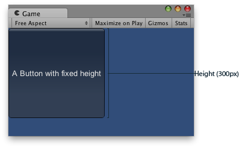

GUILayout.Height
Description 描述
Option passed to a control to give it an absolute height.
Note: This option will override the Automatic height Layout parameter

Fixed Height for a GUI Control.
using UnityEngine;
public class ExampleScript : MonoBehaviour { // Draws a button with a fixed height void OnGUI() { GUILayout.Button("A Button with fixed height", GUILayout.Height(300)); } }